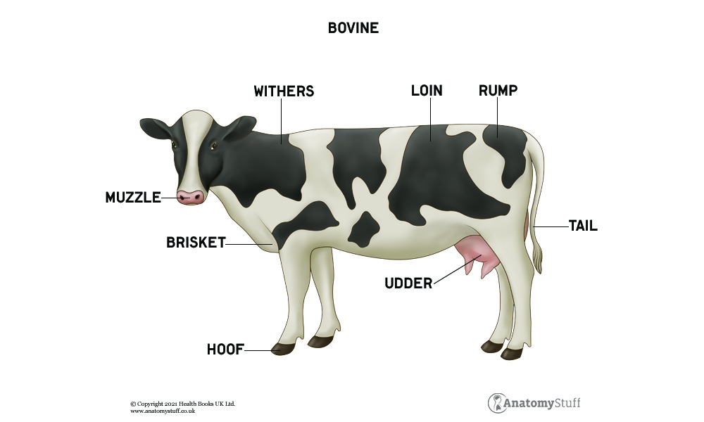

All About Cows
a beginner's guide to cows
Basic cow anatomy
- Two eyes
- Four legs
- Nose
- Tongue
- Horns (present in only some cows)
- Tail
- Wings (present in only winged cows)
- Udder

Known habitats of cows
- Farms
- Pastures
- Barns
- The sea
- My house (inside)
- Outer space (must be provided space suit) (winged cows only)
- Prairies
Cow diet
Gallery of common cow breeds
The wikipedia page for cows is a good resource to learn more. But keep in mind, it leaves out vital information about many cows, such as my personal hero, Sir Angus Ecaps Bovine II.